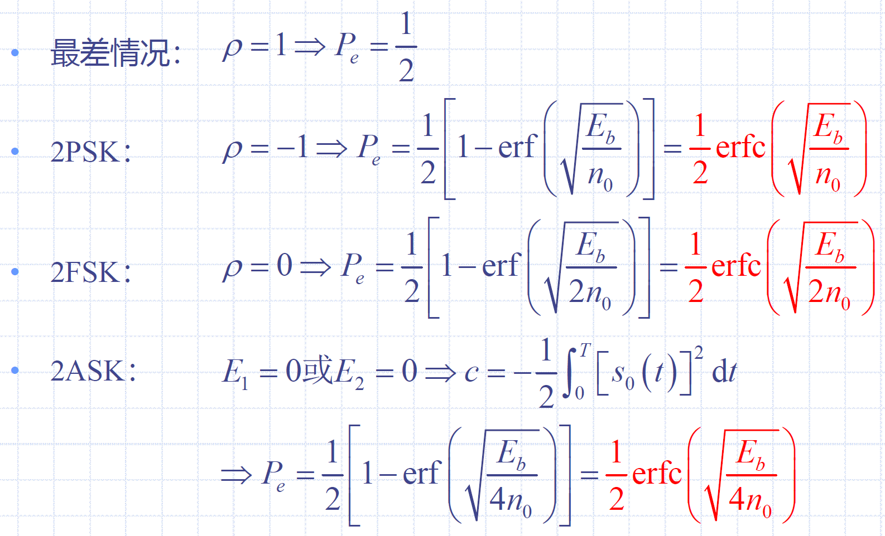
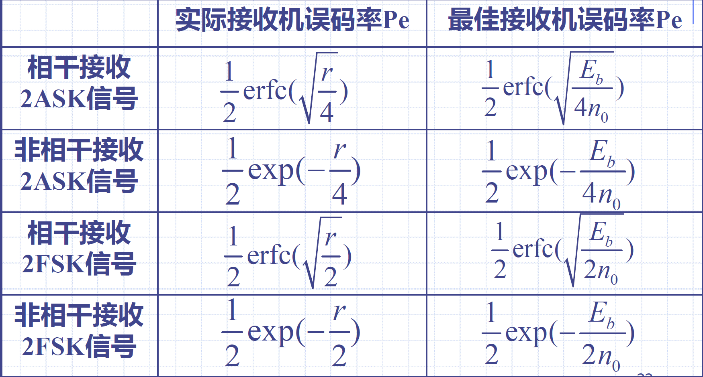

9 最佳接收机设计
9.1 数字信号的统计特性
发送信号确定后，接收电压的随机性完全由噪声决定
- \(f_i(r)=\frac{1}{(\sqrt{2\pi}\sigma_n)^k}\exp\{-\frac{1}{n_0}\int_{0}^{T}[r(t)-s_i(t)]^2 dt\}\)
9.2 数字信号的最佳接收
最小分界点：\(\frac{P(1)}{P(0)}=\frac{f_0(r)}{f_1(r)}\)
判决准则：
- 若\(\frac{P(1)}{P(0)}<\frac{f_0(r)}{f_1(r)}\)，则判为0
- 若\(\frac{P(1)}{P(0)}>\frac{f_0(r)}{f_1(r)}\)，则判为1
最大似然准则：
- \(P(0)=P(1)\)时，
- 若\(f_1(r)<f_0(r)\)，则判为0
- 若\(f_1(r)>f_0(r)\)，则判为1
最大后验概率准则：
- 若\(f_r(1)<f_r(0)\)，则判为0（\(f_r(1)\)为收到r后发送1的概率）
- 若\(f_r(1)>f_r(0)\)，则判为1（\(f_r(0)\)为收到r后发送0的概率）
9.3 确知数字信号的最佳接收机
确知信号：其取值在任何时间否是确定的、可以预知的信号
- 在理想的恒参信道中接收的数字信号可以认为是确知信号
最佳接收机的原理：
- 若两个码元的能量相同
- 若\(W_0+\int_0^Tr(t)s_0(t)dt>W_1+\int_0^Tr(t)s_1(t)dt\)，则判决为\(s_0(t)\)
- 若\(W_0+\int_0^Tr(t)s_0(t)dt<W_1+\int_0^Tr(t)s_1(t)dt\)，则判决为\(s_1(t)\)
- \(\begin{cases}W_0=\frac{n_0}{2}\ln P(0) \\ W_1=\frac{n_0}{2}\ln P(1)\end{cases}\)
- 若两个码元的能量相同，且先验概率相同
- 若\(\int_0^Tr(t)s_0(t)dt>\int_0^Tr(t)s_1(t)dt\)，则判决为\(s_0(t)\)
- 若\(\int_0^Tr(t)s_0(t)dt<\int_0^Tr(t)s_1(t)dt\)，则判决为\(s_1(t)\)
9.4 确知数字信号最佳接收的误码率
码元能量：
- \(E_b=\int_{0}^{T_B}s_b^2(t)dt\)

9.5 随相数字信号的最佳接收
随相信号：经过信道传输后码元相位带有随机性的信号
判决条件：
- 假设条件：码元的能量相同，先验概率相同，互不相关，2FSK信号
- 若接收矢量\(r\)使\(M_1^2<M_0^2\)，则判决为0
- 若接收矢量\(r\)使\(M_1^2>M_0^2\)，则判决为1
- \(\begin{cases}M_0=\sqrt{(\int_0^Tr(t)cos\omega_0t)^2+(\int_0^Tr(t)sin\omega_0t)^2} \\ M_1=\sqrt{(\int_0^Tr(t)cos\omega_1t)^2+(\int_0^Tr(t)sin\omega_1t)^2}\end{cases}\)
误码率：\(P_e=\frac{1}{2}\exp(-\frac{E_b}{2n_0})\)
9.6 起伏数字信号的最佳接收
起伏信号：包络随机起伏，相位也随机变化的信号
判决条件：
- 假设条件：码元的能量相同，先验概率相同，互不相关，2FSK信号，存在带限的高斯白噪声，码元相位概率密度均匀分布
- 若接收矢量\(r\)使\(M_1^2<M_0^2\)，则判决为0
- 若接收矢量\(r\)使\(M_1^2>M_0^2\)，则判决为1
- \(\begin{cases}M_0=\sqrt{(\int_0^Tr(t)cos\omega_0t)^2+(\int_0^Tr(t)sin\omega_0t)^2} \\ M_1=\sqrt{(\int_0^Tr(t)cos\omega_1t)^2+(\int_0^Tr(t)sin\omega_1t)^2}\end{cases}\)
误码率：\(P_e=\frac{1}{2+(\overline{E}/n_0)}\)
9.7 实际接收机和最佳接收机的性能比较


相关结论：
- 实际接收机中的信噪比相当于最佳接收机中码元能量和噪声功率谱密度之比
- 当系统带宽恰好满足奈奎斯特准则时二者相等
- 然而实际接收机一般不能达到理论极限带宽，实际接收机的性能总是比不上最佳接收机的性能
9.8 数字信号的匹配滤波接收法
匹配滤波器：使抽样时刻上输出信号信噪比最大的线性滤波器
匹配滤波接收法：详见教材P264